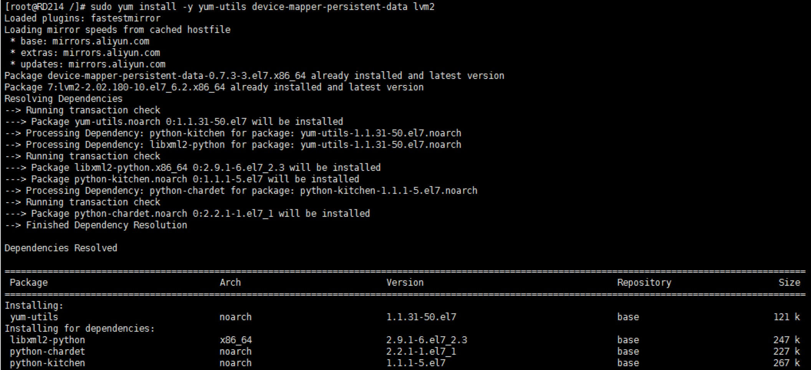
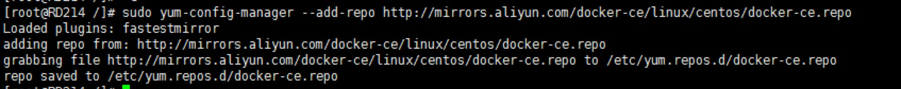
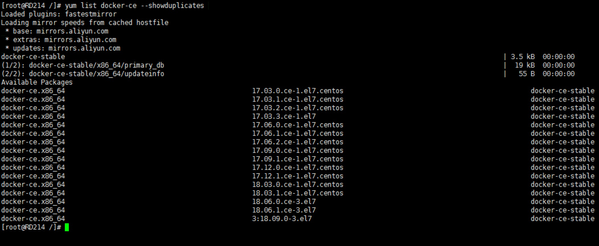
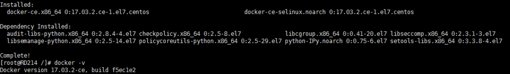
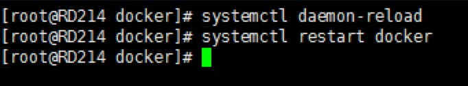
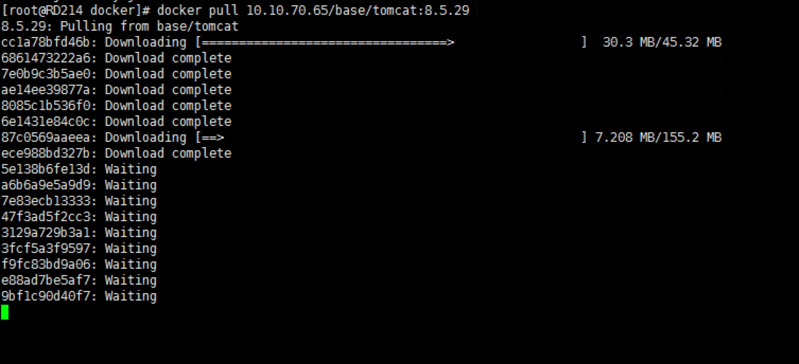

Docker指定版本的安装及镜像源的配置
docker的安装
ps：如果安装过docker，请参照网上的流程清除docker缓存。
使用阿里源进行安装
仓库配置
sudo yum install -y yum-utils device-mapper-persistent-data lvm2

sudo yum-config-manager --add-repo http://mirrors.aliyun.com/docker-ce/linux/centos/docker-ce.repo

查看docker版本
yum list docker-ce --showduplicates

安装指定版本
yum install -y --setopt=obsoletes=0 \
docker-ce-17.03.2.ce-1.el7.centos.x86_64 \
docker-ce-selinux-17.03.2.ce-1.el7.centos.noarch

配置docker仓库
先启动docker服务，建立docker文件夹
systemctl enable docker 设置为开机启动
systemctl start docker
首先在etc/docker目录下建立daemon.json文件，并写入目的ip(启动docker服务后)。
vim /etc/docker/daemon.json
1)修改配置文件 vi /etc/docker/daemon.json
2)修改该属性: {"insecure-registries":["登录的ip地址"]}
3)重载此配置文件 systemctl daemon-reload

4)重新启动docker: systemctl restart docker
登录docker仓库
docker login 10.10.70.65
输入账号，密码，显示登录成功，目录下会生成key.json，是本次登录的相关信息，现在就可以从仓库中拉取镜像了。
docker pull 10.10.70.65/base/tomcat:8.5.29
